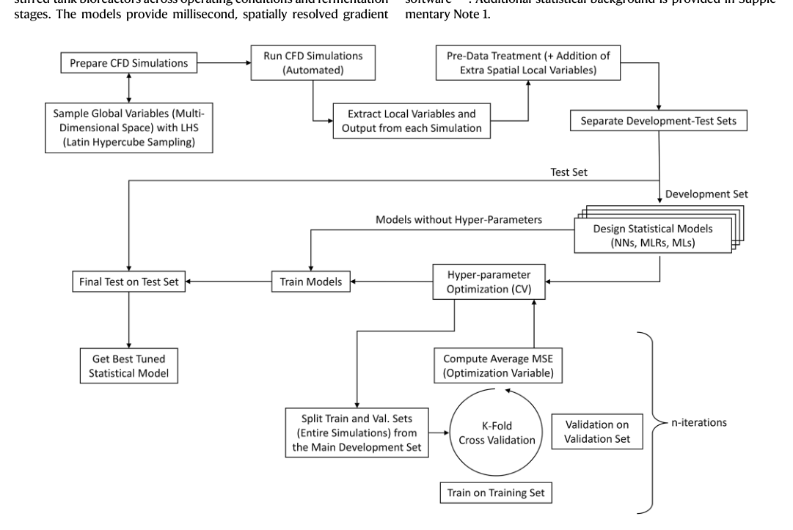
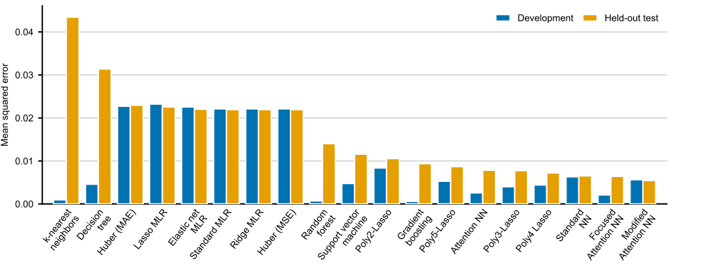
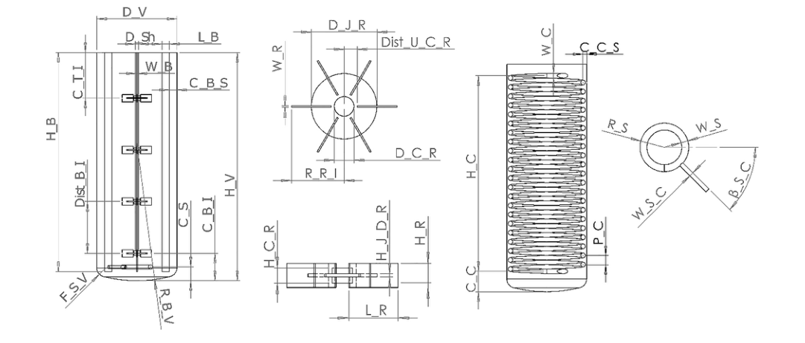
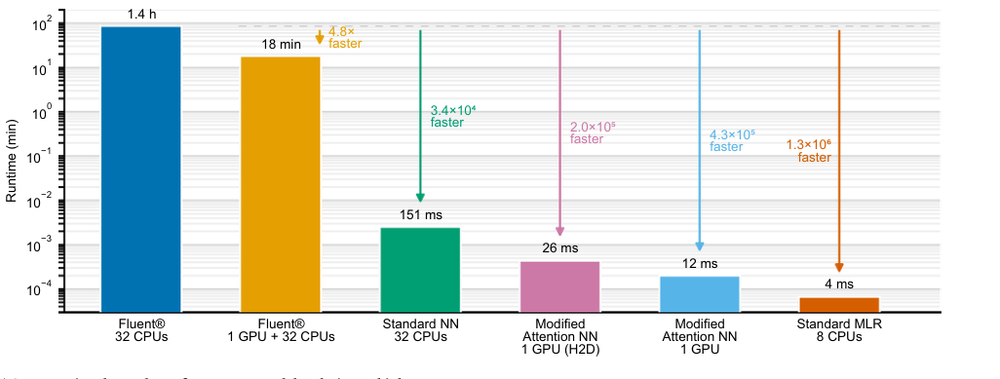
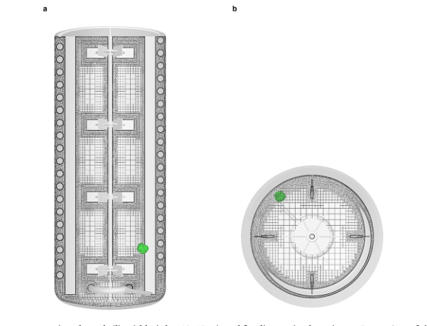

全文精读
工业生物反应器三维底物梯度的机器学习快速预测
Machine-learning surrogates enable rapid prediction of 3-D substrate gradients in industrial bioreactors
解读更新 2026-10-16 15:24 · 依据论文全文整理
全文精读已完成，文章版正在逐步升级。现有内容可继续阅读。
本文针对工业搅拌罐中CFD预测三维底物浓度场耗时的问题，训练监督式代理模型，将全局操作条件与局部空间特征映射为浓度场。作者比较多种模型后报告，Modified-Attention NN在留出测试集上表现最佳；但误差仍集中于进料极值区和叶轮间高剪切区。研究未做实验验证，且模型受单一几何及单相MRF/RANS、Monod动力学设定限制。其价值在于展示快速筛查潜力，而非证明可替代CFD或跨尺度通用。
研究问题
作者希望解决高保真CFD预测工业搅拌罐三维底物梯度计算成本高、难以用于常规优化的问题，并指出既有方法多关注低维输出或二维流场。研究目标是依据工况及空间位置直接预测完整三维浓度分布；作者称目前缺少可直接比较的同类体积场代理模型，因此以底层CFD作基准，而非与其他三维代理横向比较。
方法与路线
作者基于760组CFD模拟构建监督学习数据，采用LHS覆盖全局工况，并把全局参数与局部空间描述符共同用于预测。比较线性、树模型、SVR及多种神经网络结构；以qS/qS,max作为主要目标，按模拟分组进行交叉验证，并保留独立测试模拟。作者还用体积加权KDE检查子样本分布。
创新与比较
作者强调方法直接从全局操作条件映射到完整三维浓度场，并设计不同神经网络输入拓扑，使全局工况能够调制局部空间特征。相较聚焦低维指标或二维流场的既有工作，这是空间预测粒度上的推进。解读：本文贡献侧重代理建模框架及目标变量表示，而非提出新的CFD方程或实验验证体系。
证据与发现
作者报告Modified-Attention NN在独立测试集上MSE为0.0054、R²为0.91；Focused-Attention NN的空间界面呈现较清晰，而前者全局MSE略低。学习曲线显示高容量模型继续受益于更多模拟，但边际改善减小。图示及正文指出误差集中在进料附近、耗竭区与叶轮间边界，因此作者将模型定位为快速筛查工具。
局限与边界
作者明确未进行实验验证，数据来自单一几何、单相RANS/MRF和Monod动力学，模型因此是CFD一致的模拟器而非实验验证的反应器预测器；局部极值及高剪切区可靠性较弱。原页同时写明采用96 m³几何并称总容积170 m³，表述不一致，可能影响对设备规模的理解；本资料未提供可据以消解该差异的信息。
方向关联
与智能运维方向的联系主要是潜在的快速工况扫描、在线设定值优化和数字孪生集成，作者将其视为应用前景，而非已验证的运维系统。与结构设计和可靠性研究的联系较间接：三维梯度及局部误差可提示需重点检查的区域，但现有证据不足以证明其能直接支持设备可靠性判定或结构改型。
后续研究建议
建议先针对进料极值区、底部耗竭区及叶轮间高剪切区开展定向CFD采样，并用实验测量检验预测偏差；再评估不同尺度、几何、流体性质及动力学条件下的迁移能力。若用于智能运维，应进一步验证在线数据输入、工况域外识别与不确定性告警。以上为建议，作者提出的扩展方向不等同于本文已完成的验证。
阅读建议
建议阅读，尤其适合关注反应器建模、CFD代理模型及机器学习验证设计的读者；文中对局部误差、留出测试和适用边界的讨论，可帮助判断快速预测结果能否支撑工程决策。
原图未改动。以下图注来自标注的来源，不据此补写摘要未报告的实验结论。
已取得的论文原图


原文图注与出处
Fig. 1 | End-to-end workflow for the development of CFD-driven surrogate models. The pipeline integrates automated data generation with rigorous statis- tical benchmarking. Top: Global operating conditions are selected via Latin hypercube sampling (LHS) to drive high-fidelity CFD simulations, generating a dataset of 3-D substrate concentration fields. Middle: Local flow variables are extracted and enriched with spatial descriptors before being partitioned into
Puig-I-Laborda, Víctor et al.
原文图页 · CC BY 4.0

原文图注与出处
Fig. 2 | Generalization performance of candidate surrogate models on the primary target qs=qs, max. Bars represent the MSE on the development set (blue) and the strictly held-out test set (orange). Models are ranked by test-set accuracy (left to right: worst to best). (Left) Non-parametric methods like k-NN and single DTs suffer from high variance and poor generalization. (Middle) Linear baselines
Puig-I-Laborda, Víctor et al.
原文图页 · CC BY 4.0



原文图注与出处
Fig. 5 | Computational speed-up of surrogate models relative to high- fidelity CFD. The bar chart compares the wall-clock time required to predict a single three-dimensional cell-performance field. Standard CFD simulations require minutes to hours, even with GPU acceleration, whereas the surrogate models
Puig-I-Laborda, Víctor et al.
原文图页 · CC BY 4.0已取得的论文原图


原文图注与出处
Fig. 7 | Representative poly-hexcore computational mesh (liquid height=10.65 m) and feeding-point location. a Front view of the computational mesh and internal reactor structures for a representative CFD case. b Top view of the same mesh. The green marker indicates the feeding-point location.
Puig-I-Laborda, Víctor et al.
原文图页 · CC BY 4.0查看公开摘要
High-fidelity computational fluid dynamics (CFD) provide detailed substrate gradient predictions in industrial stirred-tank bioreactors but are computationally intensive, limiting their routine application. We developed surrogate models trained on $$760$$ 760 CFD simulations to rapidly predict fully 3-D substrate concentration fields from global operating conditions (e.g., stirring speed, feeding strategy, feeding point location, fluid density and viscosity, liquid height, bio-kinetic parameters, biomass concentration), and local spatial descriptors (e.g., distance to the feeding point). Among various methods, attention-based neural networks achieved the highest accuracy (test $${{{\rm{R}}}}^{2}\approx 0.91$$ R 2 ≈ 0.91 ), capturing essential mixing features and enabling millisecond-scale inference—up to a million-fold speed-up compared to CFD. These surrogates facilitate rapid exploration of operating spaces, supporting real-time optimization and digital-twin frameworks in bioprocessing. Our results demonstrate that data-driven models can effectively couple hydrodynamics and biokinetics to provide fast, accurate spatial predictions, advancing capabilities for industrial bioreactor design and control.